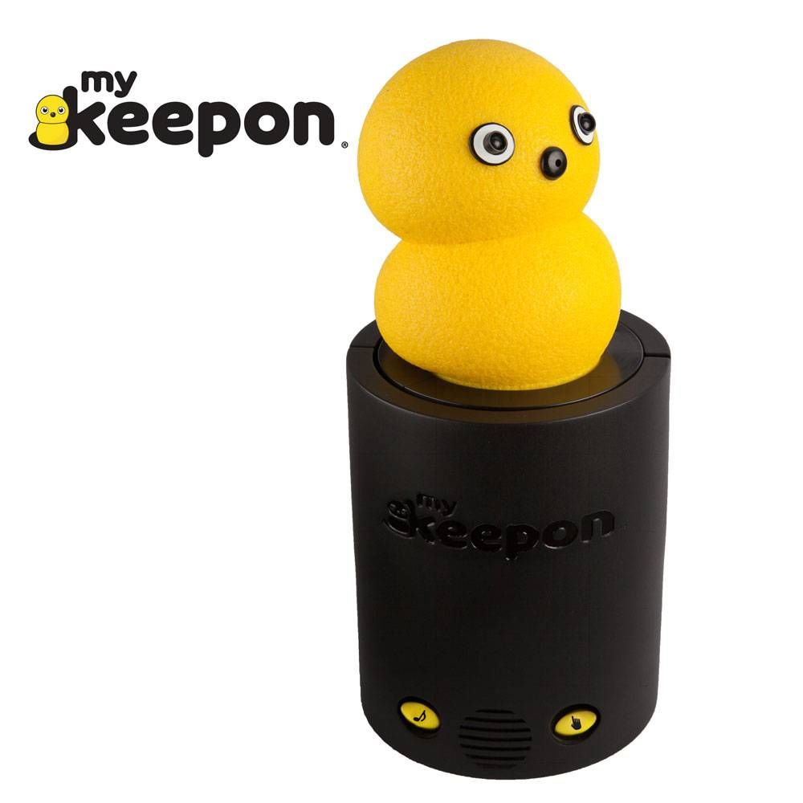

Interfacing & Embodiment: "Baby Tango" Dancing Robot Attempts to Communicate
界面化，具身化，舞蹈机器人的沟通方式

本期文章：Kroma, A., & Mazalek, A. (2021, June). Interfacing & Embodiment:” Baby Tango” Dancing Robot Attempts to Communicate. In Proceedings of the 13th Conference on Creativity and Cognition (pp. 1-5). 原文
Introduction
数十年以来，多种多样的机器人艺术作为研究以及艺术实践的主题在领域内活跃着。举个例子就比如自二十世纪20年代初开始发展的跳舞机器人。 由此，人们又做了很多尝试去将不同的舞蹈与机器人做适配，同时探索新的人机交互方法。这些尝试在新技术出现后变得更加热门，彰显着交互性舞蹈机器人广阔的未来发展前景。 这些发展又是由新一代艺术家的涌现推动的，他们来自跨学科背景，了解新媒体的供能性，以及在艺术实践中如何创造性地利用他们。 这一趋势也将随着机器人领域内的新技术发展不断涌现而持续进行。
本文展现了对当下舞蹈机器人艺术、可穿戴式触觉感应设备以及其他理论框架的现状观察，之后根据上述这些观察，提出了一个Baby Tango（探戈宝贝）的艺术体验原型。制作这个原型的动机来源于对界面化interfacing和具象化embodiment的想法的反思以及探寻其对未来人机交互潜在影响这两点。而这个原型是由研究与机器人之间进行语言或者非语言的交流和交互的方法得来的
Related work
相关工作涵盖三个方面的概念：机器人艺术，（具象化与具象化交互）embodiment和embodied interaction，触觉与躯体界面。
接下来文章对这些个方面的概念作一个简介。
1. 机器人艺术
首先对机器人艺术作一个大致定义。机器人艺术领域可以视作是木偶戏与技术融合的结果。艺术家们长期以来都致力于为"死物"赋予生命，比如木偶以及漫画。为了达到这个目的，艺术家们探索不同的方法和技术。新近技术发展为实现更高层次的沉浸以及（具像化）embodiment敞开了大门
这些艺术由将木偶戏与电子动画技术融合始，发展为成熟的机器人艺术体验。
概念上说，艺术家热衷于创造性地打破周边世界的规则。这一点在很多领域的艺术都有所表达，比如模仿艺术，抑或是通过模仿机器人运动的机械舞。这些艺术非常流行，得以成为舞蹈机器人的灵感来源。
Peng等人提出了舞蹈机器人在社会机器人领域的重要性，并且得出结论称，机器人舞蹈分为四大类别：1. 人机协作式舞蹈 2.模仿人类式舞蹈 3. 随歌起舞式舞蹈（音乐同步起舞，音乐输入以后，机器人去判断这个音乐的特征，然后输出某一特定的舞步）4. 针对机器人编舞的舞蹈。 在某些实践当中，舞蹈机器人甚至被用于学前教育中作为机器人学和编程的教具出现。 舞蹈机器人的范例有很多，文章中将集中于几个比较类似的舞蹈机器人例子
接下来文章开始介绍几种不同的机器人和一些领域研究。
Ms DanceR 在文章背景下是被设想作为评估和了解有效人机交互的工具出现的。它是万向移动的，包含一个躯体力敏感应器，用一个叫"CAST"的控制结构来跳舞。（舞伴机器人）

Ms. DanceR 1.

Ms. DanceR 2.
Keepon 是一个用于生成有节奏的社交互动行为的跳舞机器人，是作为一种社交玩乐游戏形式的机器人艺术出现的。BeatBots - My Keepon
Keepon is a social robot that interacts with people and dances when music is playing. It's used to engage with children in autism research.
视频： Keepon dança "Don't You Evah" - SAPO Vídeos

Figure : Keepon.
Oliveira等人提出了一个用于听觉驱动人机交互的通用主动机器人听觉框架。这个框架的特点是它能够同时实现语音和音乐同步处理，支持语言和非语言交互以及整合了机器人听觉感知模型。
最后一个例子是cody，cody是一个通用机器人，并不是作为舞蹈机器人使用的，其使用触觉交互来当作舞伴机器人来使用。
2. Embodiment and embodied interaction 具象化与具象化交互
所谓的Embodiment是基于认知不仅仅是经由大脑而通过整个身躯得来，穿戴式科技产品有着在影响思维进程上的卓越适用性，通过安装这些设备，可以触及到交互设计中不常触及到的需要开展反馈循环（可用性测试，大致就是探寻需要反馈的点，开展测试，得到反馈，修改并再次寻找反馈的过程）。这些设备相较起视觉而言，提供了"切身感知"和更多的可能性。
文中对embodiment引述了多个解释：第一个是语义上的解释：embodiment是将无形之物用有形形式代表的行为。第二个解释则集中于embodiment创造的意义的角度对其作解释，将embodiment定义为与现实世界接触并赋予某物意义，由此引申将embodied interaction 定义为与有形物交互以创造可以被把握和分享（复述、传达）的意义的行为
这些定义为建立理论框架奠定基础，由此推动在不同的现实背景下创造有形体验的过程。尽管当前具象化的应用大多是为了检验沉浸性、参与度和存在感，举例说明就是，评估具象化如何促进非语言形式的交流以及在艺术情景中的以为还是挺有趣的 （非语言形式就是一个需要被具象化的对象）
3. 触觉与躯体界面
当今的技术正越来越走向嵌入式和隐秘式（指机器人身上的设备）。由此，可穿戴计算系统在人机交互中变得越来越重要。这也推动了日渐兴起的关于将躯体作为交互界面的讨论。这个讨论由触觉在传达信息及激发情绪上超越其他感官所不能的特殊天性推动的。研究人员在不断评估身体触觉体验的最佳部位，文章后面的关于触觉背心设计部分会提到这个部分。 而作者提出的"探戈宝宝"体验就是一个将身体作为界面的探索，尝试用其来接收来自机器人的触觉沟通。其同时也在探索新形式、非言语人机交互的可能。然而，多年来人们对人机之间语言或非语言交流沟通的概念进行了不同程度的深入研究，各种方法路径及其论证闭环已臻于完善。
Experience Design
接下来的部分，笔者探讨设计过程以及合理性依据、主题、目标受众、概念和技术设计方面的内容。
1. 设计过程及合理性依据
Baby tangle 目标用户是探戈舞者、机器人艺术家、业余爱好者以及数字媒体发烧友。其为关于人机交互以及机器人未来作为交互玩乐体验中的一部分的讨论作了一定贡献。 Baby Tangle体验的创作经历了包括机器人研究、触觉研究、机器人供能性及艺术相关领域现状等研究，最后经过一系列的迭代过程形成最终设计。
2. 体验的主题：探戈沙龙
探戈是一个非常流行的阿根廷和乌拉圭传统舞蹈，被列在联合国教科文组织非物质文化遗产名录…
出于它的流行以及吸引力，选择探戈作为主题也有其他有趣的意义：
探戈通常与同性舞伴一起跳（电影闻香识女人里面的探戈场景），这使其作为一种高包容性的舞蹈，得以使用无性别的机器人作为舞者，（扯，与其说是探戈的特性，不如说是机器人本身默认的无性别特性导致的）可以避免沉浸感和参与感受到参与舞者潜意识（性别）偏见影响。另外，探戈沙龙是一个即兴的社交舞蹈，聚焦于舞步的组合而不是表演或者编舞等内容。由此可以将随机与模糊逻辑应用于其中以提高重复游玩性和降低参与舞者的体验难度
3. 体验概念
Baby tango 是一个模拟探戈沙龙舞者的享受音乐并且随音乐起舞的机器人。这个机器人像一个小孩，但是它没有视觉，依靠声纳感应器来探测。Baby tango会尝试交流，其基本交流层次是利用灯光，其次是借助蜂鸣器产生随机音调交流，在舞蹈过程中，其使用8个不同的语汇。 Baby tango会尝试和房间里的人交流，尽管他看不见，但是他知道人在哪。这也是为什么当它感应到人们近在咫尺的时候，会惊慌，然后尝试通过触发触觉背心上所有的触觉点来摇晃他们。（靠近人会舞蹈） Baby tango 很害羞，所以用"通灵术"的方式与人交流。尽管他很喜欢探戈，但它不喜欢近距离接触。这种通灵术是以触觉反馈的方式出现的。其表达紧张感的其中一个方式就是触发所有的触觉点。 然而他也是一个爱玩的小孩，所以其希望参与者能够和他一起跳舞。这也是为什么它会触发与其移动相对应的触觉点。当它决定说话到时候，这种邀舞过程会更加明晰。
Baby tango 用不同节奏和颜色的灯光、不同音高和组合的音调、一些语言词汇和振动模拟触觉反馈来尝试与参与人交互。 在与baby tango交互和baby tango作出行为反应的过程中，意义就得以产生并诠释（邀舞等抽象行为）。但这个诠释过程取决于人怎么去理解机器人说了什么。 值得一提的是，机器人能够在感觉周边的同时，保持舞步节奏，这些舞步由其通过模糊逻辑即兴生成出来，以保证舞蹈的完整性。
4. 技术上的设计
这个体验的技术设计包含两个机器人元素：一个移动机器人以及一个穿戴式触觉背心。
元素1：移动机器人 Baby Tango
这个机器人的设计经历了三次迭代
第一次迭代时是制作一个用固定编舞跳舞的机器人。第二个版本集中于跳舞时规避障碍物，这一点用两个超声波传感器来实现。这个版本的最初目的是让机器人同时规避掉来自四面八方的障碍物的同时跳由固定编舞动作的舞蹈。
尽管像"探戈遐想tango fantasy"这样的固定编舞舞蹈在探戈中非常流行，作者认为机器人在跳非固定编舞的、交互性的舞蹈上有着巨大潜力。由此引发了第三次迭代。
第三次迭代主要谈到一些技术细节，比如换了个超声波感应器，以及调整了沟通通道的实现设施配置等等。
在设计baby tango的时候，作者考虑了Blow工作——其将Mcloud的设计空间图应用在机器人面部设计上。Blow称在设计机器人面部的过程中，越少纠结于机器人的面部细节则越能集中于将工作放在有表现力的特征上。（不过多讨论机器人的面部细节，而集中于最有表现力的、最能传达信息的特征） 另外，作者将机器人的语音调整得像一个小孩以增加人的联想、共情和喜爱。
机器人如图四表现得那样，主要跳五种主要类型的探戈舞步。这些舞步能够组合成不同的舞蹈并且让人形成一种舞蹈很真实的感觉。（不是瞎跳的） 机器人的行为由图四b中的控制架构决定。这些行为用模糊逻辑随机化，这种做法通常用于表达partial truths（truth 指的是数学意义上的true/false，与下文的随机、模糊逻辑对应，可能partial指真假不确定的意思）。 与计算机的布尔逻辑不同，模糊逻辑是一个多值逻辑，真值在这个过程中是不能用0和1来存储的。（关于布尔逻辑、模糊逻辑、partial truth这些词，都是来自于计算机领域的词汇，这里也就不多作解释了）这一段话的意义就是选用模糊逻辑作为打乱机器人舞步组合的原因，计算机的随机不是说像人抽奖抛硬币之类的行为一样，是一种人为随机
通过应用这种逻辑和传感器读取，机器人用用了一个较低层级的智能，或者说"理智"，以及获得了一些在行动上的随机性。这两个技术使得其能够更加准确地展现智能化的即兴舞蹈。举例说明就是，如果参与舞者舞步踏到了baby tango的前面，它就会根据不同的距离和交互的时间点（timing）触发不同的反应。 因为随机化系统和模糊逻辑编程的原因，使得其不太可能会多次触发机器人的同一组语音和移动。除非是因为距离机器人太近使得机器人触发了"恐惧反应"，这个恐惧反应也就是之前提到的触发所有触觉马达的功能。
娱乐性和交互性是让参与者持续交互的重要因素。要让参与者感觉到他们的行为会影响机器人，给他们一种为机器人赋予了生命和活力的感觉。 同时，实现前文提到的，共同社交玩乐行为也可以通过允许多个参与者在机器人附近的形式实现。 研究表明，交互游戏，一种多人玩玩具的玩乐模式，是最能够让参与者沉浸其中的游玩模式。在挑战与奖励充分平衡的情况下，其能够让参与者进入"流"状态（交互领域的词汇），也就是一种让人愉快的最佳表现状态。
人类天然地就是通过社交互动繁荣发展的。游戏能够引发社会情感。根据认知领域专家的说法，这是通过反映人的大脑从环境和社会角度理解我们身边的世界来激发出的情感。这解释了在玩家拥有多种身份或者社会情境时，游戏怎么样影响玩家。在这个情境中，其他身份指的是作为与机器人进行社交互动的舞者。这里面可能还有更有趣的与机器人之间进行的一对一交互。
元素2： Embodiment 触觉背心
这个背心是让与baby tango交互的人穿的。接下来解释了这个背心的构成，以及作者将电子元件嵌在背心里以保证安全和隐秘。不重要
触觉马达放在躯干区域，是因为研究表明这个区域是最好的触觉反映区域，也是最能为用户接受的区域。放置在躯干区域还有两个方面的因素：第一是一个研究根据当前使用可穿戴设备的模式和习惯，指定了14个合适区域。作者假定这些区域对于用户来说是更容易接受触觉反馈的。 第二，探戈舞者通过这六个接触点在近距离拥抱中联系起来，这也是探戈沙龙的核心。这一点的应用是为了保证主题的完整以及探索其中的潜在因素。毕竟探戈沙龙是一种基于联系与运动学的舞蹈
此外，设计通过触发不同的触觉模式的方式引入了一套基本触觉语言，开始可以是一些有指向性的模式比如触发某一个具体位置的某一个触觉马达，再到触发全部触觉单元来表示紧张等。
Baby tango 对周边事物进行反应。当参与者走到他面前或者踏入反应范围内，它就会用规避或者交流沟通等的组合开始对参与者的入场作出反应。邀请参与者接受舞者的角色，然后与baby tango 的舞步互动。 这层交互基于传感器探测、距离估算、估算精确性和估算前进行的舞步等因素。总的来说，这个交互可以实现有意义的游玩行为。
Preliminary reception 初期投入接受度
这部分讲述作者将2.0版本试行性地投放到公众领域内，反响积极。非正式测试也表明这个体验非常有趣而且能够激起讨论。然而，未来的测试要在疫情之后才能够计划实行。
Conclusion and future work
未来可以改进的地方有很多，比如下一个要改进的就是通过增加更多的触觉马达，发展出更多的模式并将双向交互纳入其中来增加与机器人之间的触觉交互。未来也将囊括更多游戏元素像是增加重复可玩性来增加沉浸感和参与感。 他们的研究表明，这种体验活动也会吸引到成年人，而不是有些人想的那样智能吸引一些年轻点的人。总的来说，机器人能够胜任作为偏高龄成年人的舞伴的工作。技术接受模型在这个实践中也同样适用，这意味着这些机器人的吸引力受到他们的功能性和易用性的影响。这也是baby tango设计基于这两点的原因。当然未来也需要开展关于这一假设真实性的评估研究。总的来说，开展用户研究以测试这个体验实践并作未来发展非常重要。 这种评估测试也有助于我们去观察和评估最终使用者与机器人的交互并通过问卷和半结构化访谈得到他们的反馈，依此作为未来迭代更新的依据。